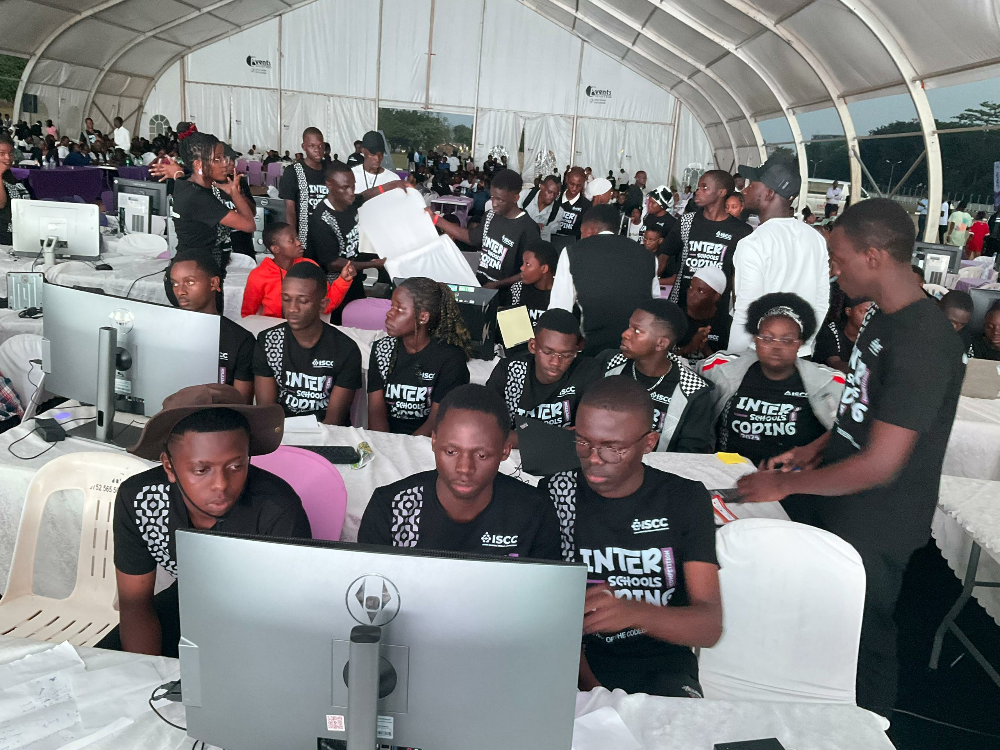
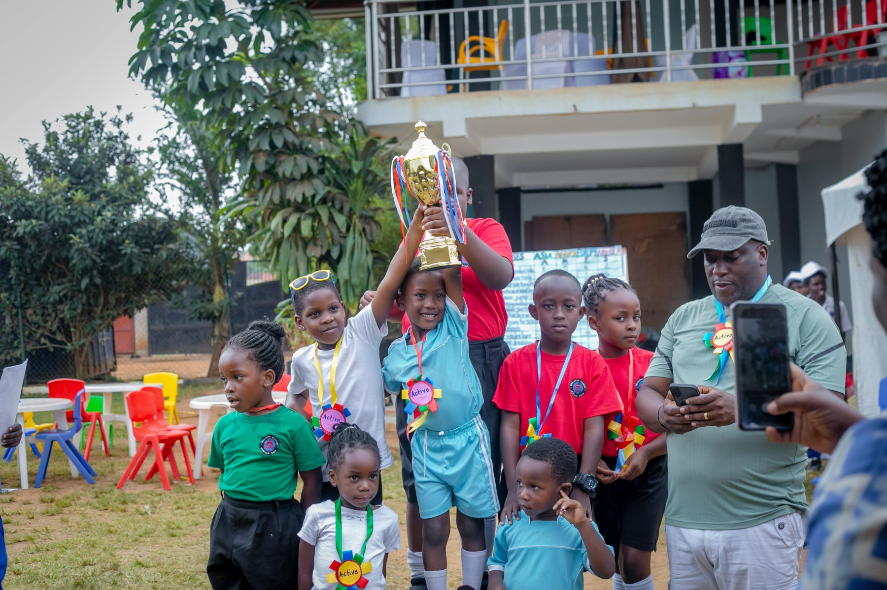
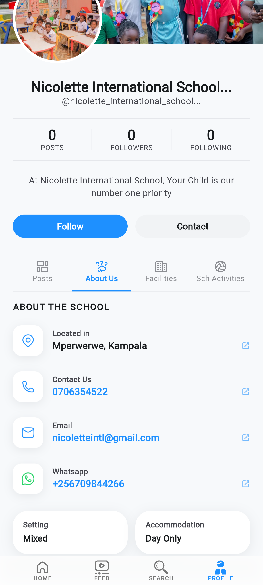
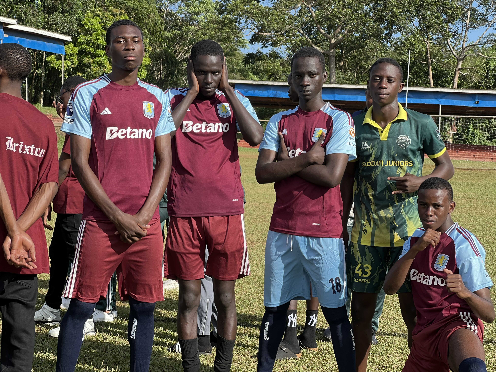
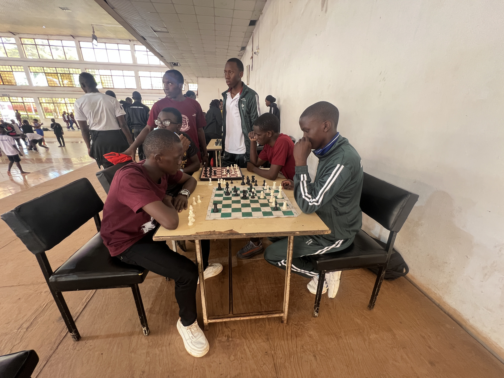
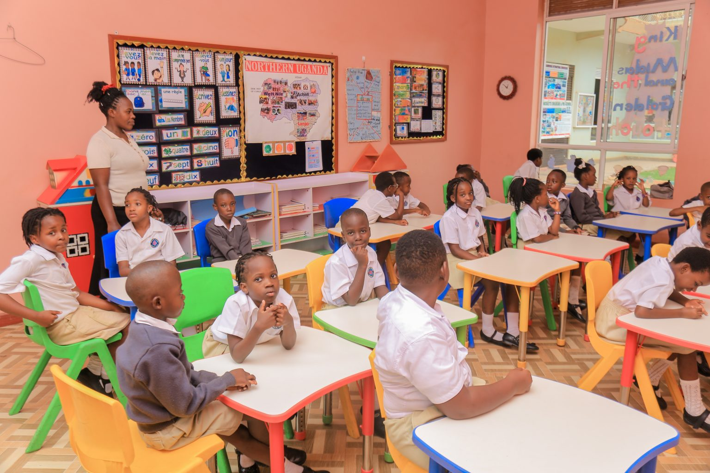
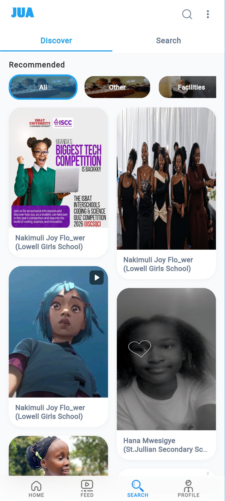

J
Featured
ISCC 💻
London College St.Lawrence · 2 hours ago

Every school has something worth showing. Jua gives schools a place to share their story, showcase what they do, communicate with their community and connect with people beyond their campus.
For parents, students and anyone looking for schools, Jua makes it easier to discover institutions, explore what they offer and get in touch with them.
Android · Free to download

London College St.Lawrence · 2 hours ago

Explore school life, activities and what happens inside.
Explore schoolsEvery day, students compete, clubs build projects, teachers organise activities and schools celebrate achievements. But much of that activity stays inside the school community — buried in feeds designed for everything else.
Jua creates a focused environment for discovering schools, school communities and school-related content. Traditional social media is designed around everything. Jua is designed around discovery.
Jua isn't trying to become another place for endless scrolling. It is creating a place where school discovery actually makes sense.
A school is more than its name, location and contact details. Jua gives schools a digital presence where they can show people what makes their institution different.

Activities, sport, clubs, events and student life happen every day. Jua turns what a school is already doing into something people beyond the school can discover.
Show school activities and everyday life.
Show teams, matches and achievements.
Give clubs a place to express themselves.
Show what your school has to offer.
Share events and memorable moments.
Celebrate accomplishments.
Communicate important information.
Give people a glimpse of the experience.

Jua gives people a real glimpse of your institution — its people, places, culture and daily life. Pictures and short stories show far more than a name ever could.
See how it worksDon't just tell people what your school offers. Show them.
Schools are filled with clubs, teams, creative groups, projects and communities. Jua gives these groups a place to express themselves and share what they do.


One School Can Tell Hundreds of Stories.
Students, teachers and other members of a school community can help spread awareness about their institution. Every event, achievement, creative project and inspiring story can contribute to a school's digital presence.

shares a project moment
shares a big win
shares an opportunity
becomes more visible
Your community can help become your school's storytellers.
No more hunting through dozens of websites or unrelated social media. Jua lets you explore activities, clubs, sports, facilities, events, announcements, location and contact details — all in a school's digital presence.

Choosing a school is about more than its name. Explore activities, discover clubs, see sports, watch events and discover what's happening — before you make your next move.
Sports competitions, creative projects, science experiments, clubs, events, achievements, performances and school traditions can become a window into school communities beyond your own — one idea can become an opportunity in another.
A school can inspire another. A student can inspire another student.
Parents search. Students search. Communities search. People want to know what an institution offers before contacting or visiting it.
Help more people discover your institution.
Showcase what your school is doing.
Make it easier for interested people to reach you.
Give students and teachers a place to share.
Share important information with clarity.
Give people a glimpse before they visit.
What Could Your School Be Missing Without It?
Someone searching for a school discovers another institution first.
A great school activity remains unknown outside the campus.
A student achievement never reaches a wider audience.
A parent struggles to find the right contact information.
Important announcements don't reach everyone who needs them.
Amazing facilities and clubs have nowhere to show their work.
You're not just joining a platform. You're making your school easier to discover.
Build your digital presence. Showcase your institution. Communicate. Connect.
Discover school life. Share moments. Find inspiration. See what other schools are doing.
Discover schools. Explore what they offer. Get in touch easily.
Share achievements, activities, announcements and stories that deserve to be seen.
Jua is creating a digital space where schools aren't simply names in a directory. They are communities, stories, achievements, people, opportunities and experiences — brought closer to everyone who wants to discover them.
Whether you're looking for a school, running one, part of a school community, or simply curious about what's happening around you — Jua gives you a new way to discover the world of schools.
Available now for Android · Beta